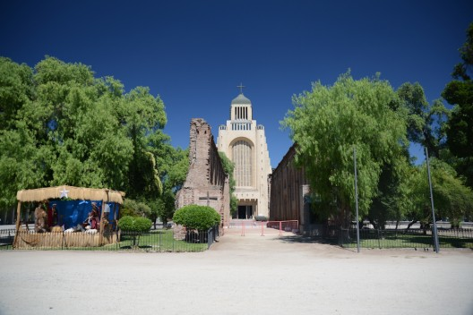

Portfolio Nicole Maturana Morales
Acceso a github
Soy una mujer apasionada por el mar y lo que involucre la naturaleza. Me gusta salir a caminar por la ciudad. Disfruto de los cerros que hay en santiago subiendo con amigos.
Nací en la región metropolitana, especificamente en la ciudad de santiago, comuna de Maipú.

Actualmente trabajo en proyectos costeros,
Estudié ingeniería civil oceanica y actualmente estoy cursando un bootcamp de desarrollo full stack python